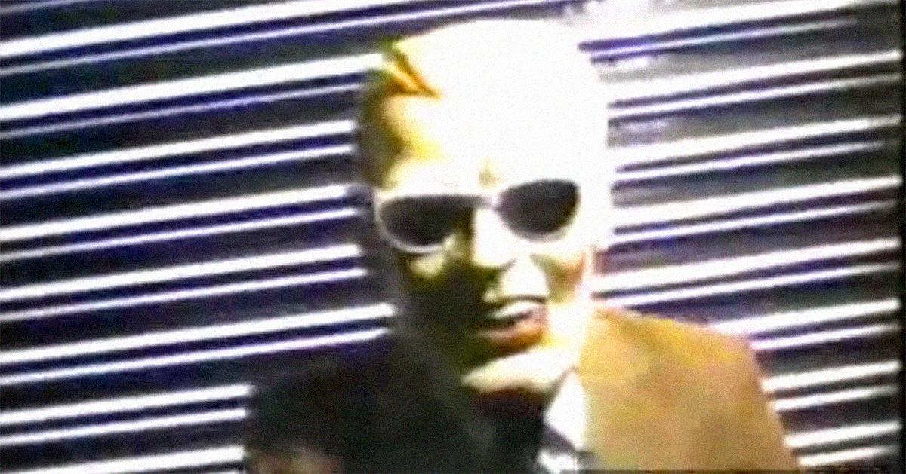
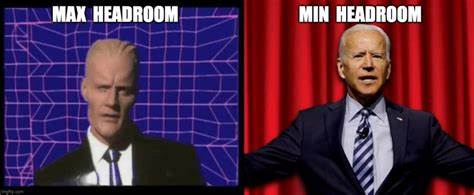

Heroes Centred

Fake Max
Fake Heroes try to copy our Heroic Max Headroom, but there can be only 1!
On November 22nd, 1987, A TV pirate hacked into WTTW Channel 11 in Chicago, Illinois, to interrupt the broadcast of Dr. Who. He rambled on and on about random stuff, not making much sense. his words were hard to understand. We here at P.M. Productions have been interested in this clip for years, but have never tried to subtitle it...until now.
Then on November 30th, 2010, a Reddit user Posted an essay stating he believes he knows who was behind the hijacking. This is his essay here..
External link here to theThe Wannabe Heroes
Other Fake Max's over the years
